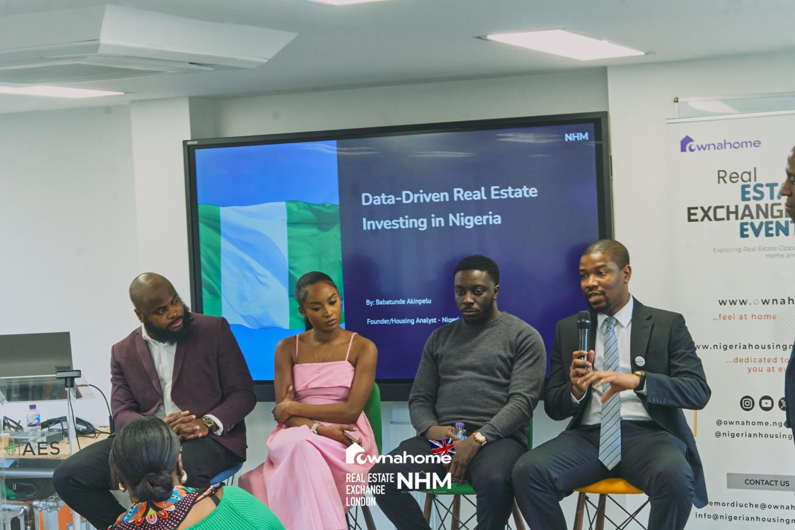
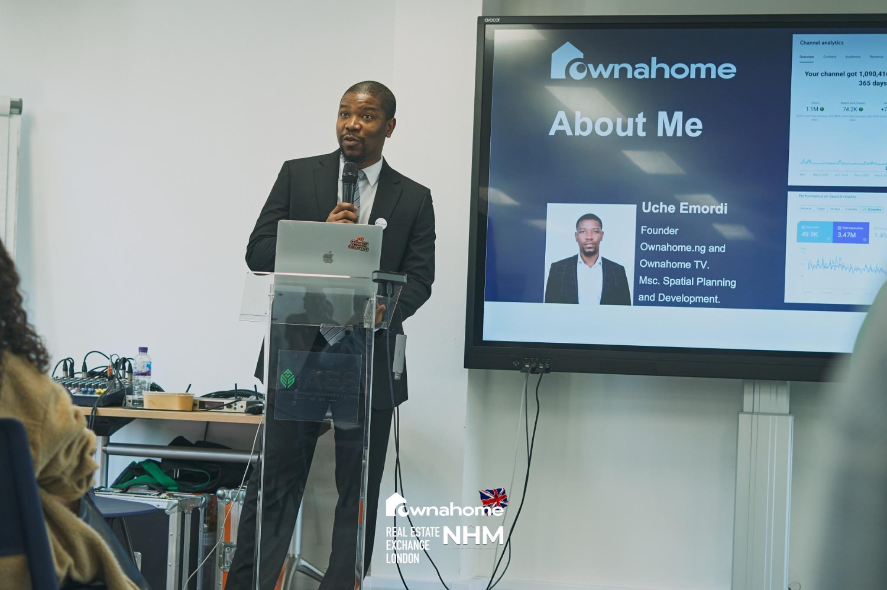

Understand the location.
El Paso sits in far west Texas, next to New Mexico and the US–Mexico border. The guide introduces the local geography and the areas under consideration.
From Nigeria. Looking towards Texas.
Get the full investor pack that includes the opportunities, people and processes for your next US property investment.

You understand the appeal of owning land. Now you want to understand what buying in the United States actually involves.
For six years, I’ve helped Nigerians in the diaspora explore Nigerian real estate. Now I’m helping Nigerians at home understand opportunities in US real estate, with a focus on land in El Paso, Texas.
This pack brings the research, purchase process and local introductions into one place. Start with the guide, then use your one-on-one consultation to discuss your questions and next steps.

If you follow how Lagos expands, you already know why location, infrastructure and the direction of development matter.
El Paso sits in far west Texas, next to New Mexico and the US–Mexico border. The guide introduces the local geography and the areas under consideration.
Explore land to the east of El Paso and its relationship to existing development. Compare actual access, neighbouring uses and the time horizon for each parcel.
Roads, utilities, zoning and holding costs all affect a land purchase. Understand what is already available and what still needs to be confirmed.
Knowing who checks what can make an unfamiliar process easier to navigate.
Learn where to look for ownership, appraisal and county records. These are starting points for research, alongside a title search and parcel-specific checks.
A title company can review recorded title matters and facilitate closing. Review the title commitment, policy coverage and exceptions before proceeding.
Discuss how funds are held and released under your purchase agreement. Confirm deadlines, conditions and refund rights with the closing professionals.

I’ve helped Nigerians invest back home. Now I’m helping Nigerians understand property opportunities in the US.
Uche Emordi Ownahome TV
Working with Nigerians in the diaspora and connecting investors with property opportunities.
Experience helping clients navigate US property purchases, with physical access to the market.
Introductions to local agents, title companies and other stakeholders involved in the process.
Property events and client conversations in the UK, Toronto and the US, alongside Ownahome TV.
Starting from a cash deposit of $16,850, these are hot market opportunities you can take advantage of now. Get pricing and more info in the guide.
Described in the guide as facing development and a major highway.
The map shows the 1-acre parcel on Jeddo Avenue, south of Kingsbury Avenue.
Described in the guide as facing a major highway, with development nearby.
Described in the guide as facing North Ascencion Highway.
Described as facing North Ascencion Highway and close to development.
Confirm availability, exact locations, acreage, access, utilities, taxes and closing costs before committing.
THE TEXAS
InvestmentUS land investment guide
+ one-on-one consultation
The guide + your next conversation
A practical starting point for researching US land, exploring your strategy and knowing which questions to ask.
Bring your goals, budget and questions to the consultation.
Nigerians considering US land investment who want a practical introduction to the process, local contacts and a one-on-one conversation before deciding how to proceed.
Yes. A complimentary one-on-one consultation is included so you can discuss your goals, ask questions and talk through the purchase process.
The guide suggests at least $10,000 in ready capital as a starting point for a conversation. That is not the full price of the properties shown here; your total budget must account for the property, closing and ongoing costs.
The service can help you explore an LLC setup. Discuss the appropriate ownership structure and any eligibility requirements with a qualified US legal and tax professional before purchasing.
Check the appraisal, applicable tax rates and outstanding amounts for the specific parcel. El Paso property is not automatically tax-free. A CPA can advise on your tax position, and an introduction can be discussed.
Buy to hold, buy to sell and buy to build are examples covered in the brief. The right approach depends on the parcel, permitted use, budget and your time horizon.
You can discuss your questions in the included consultation and receive guidance through the purchase process, including introductions to relevant local stakeholders.